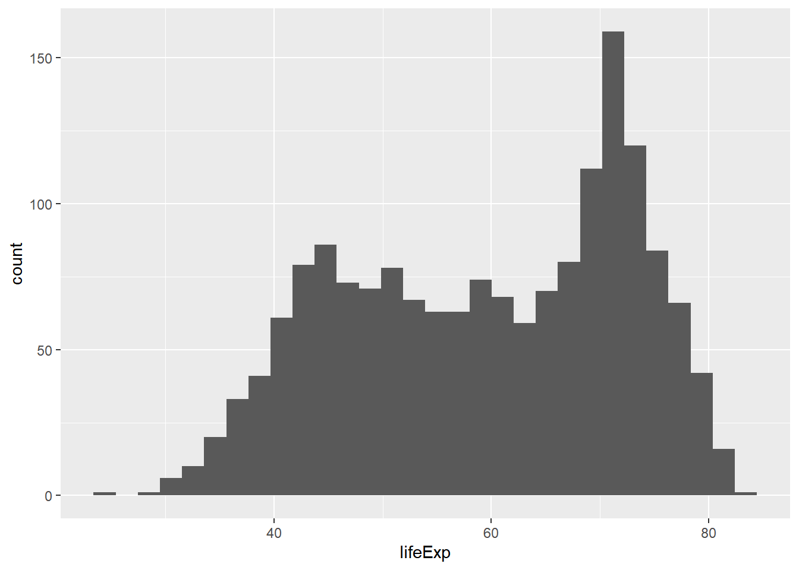
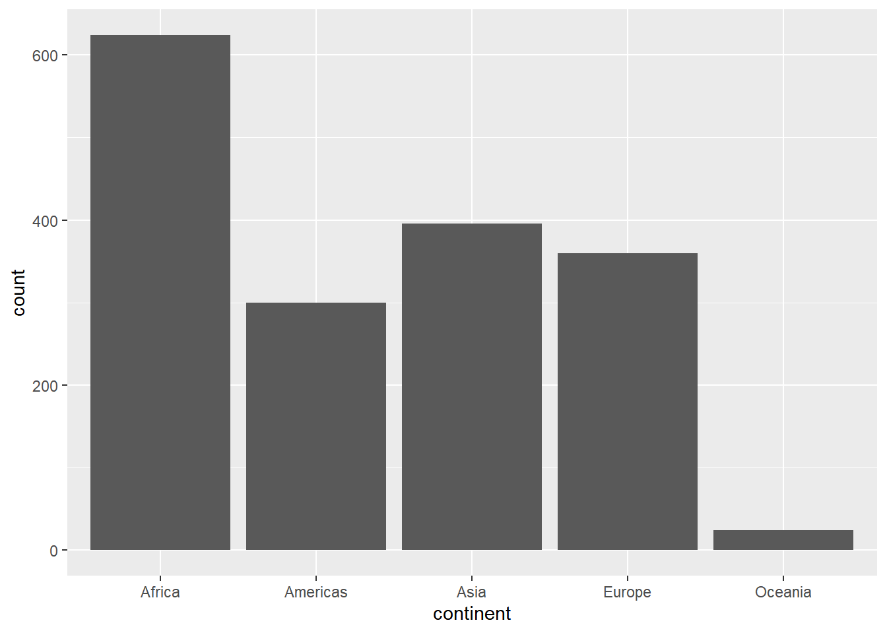
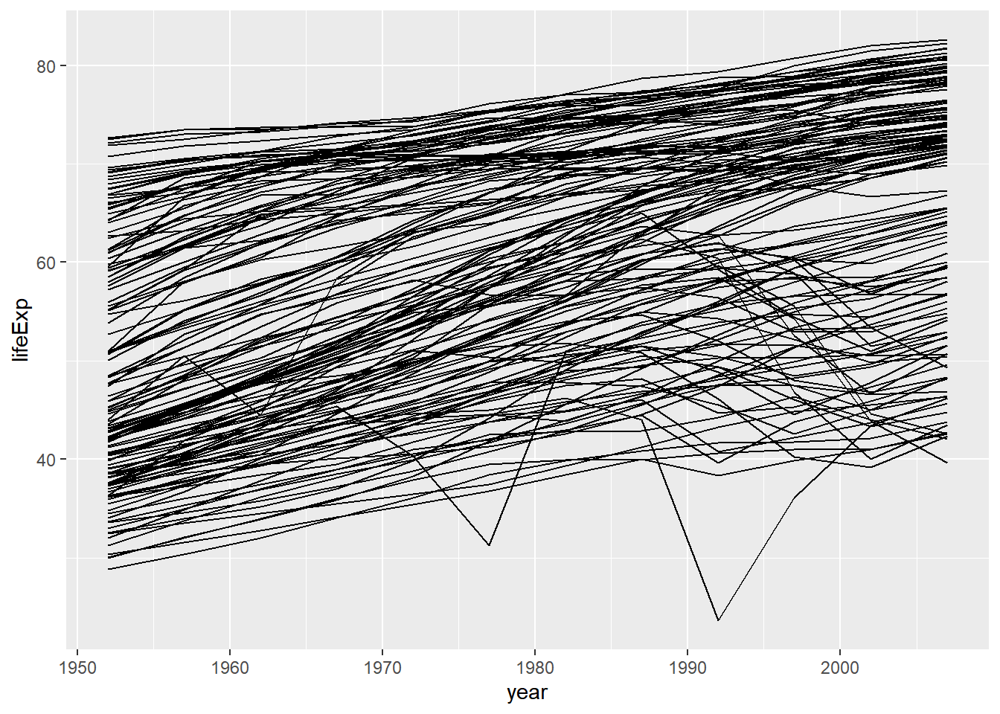
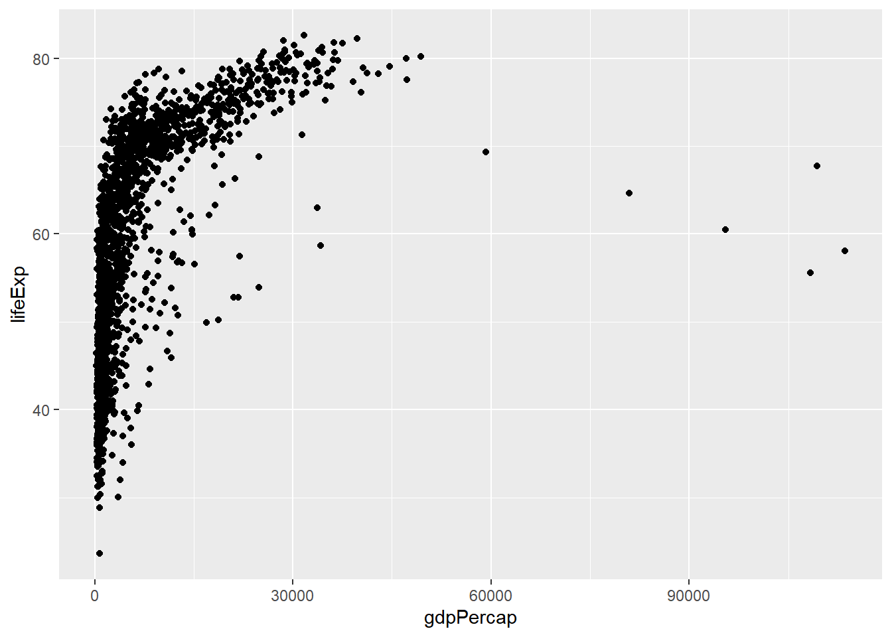
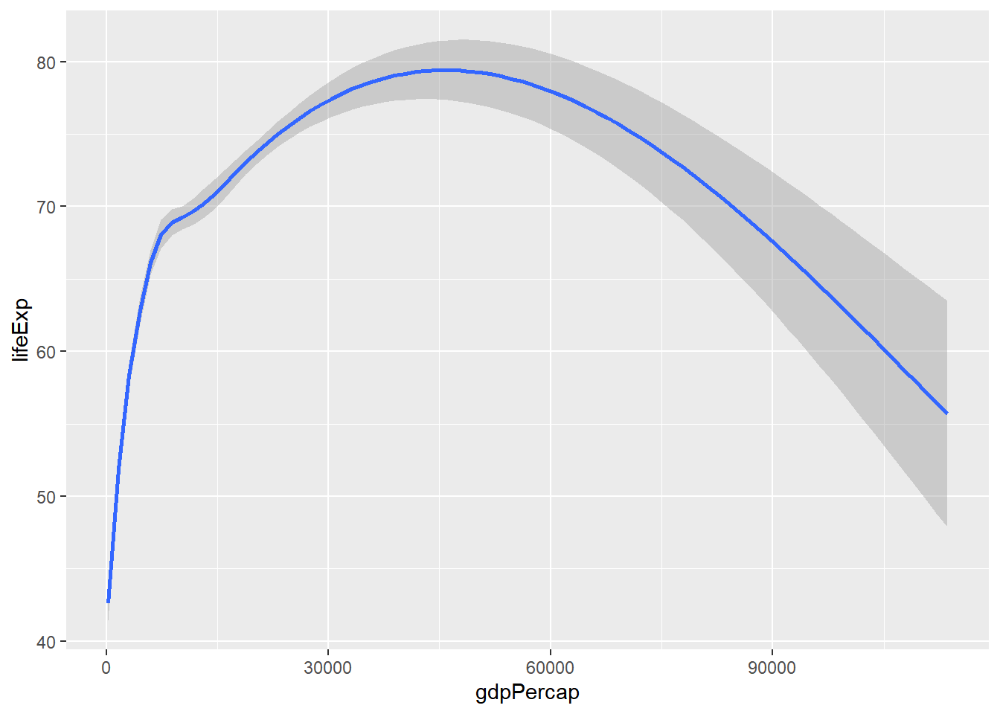

Begin data analysis by creating a new project in RStudio to keep work organized. Steps to create a new project: Click File -> Click New Project -> Set name for the directory -> Click Create Project
2 Load Libraries
Load the necessary libraries for data visualization:
# Load tidyverse for data manipulation and visualizationlibrary(tidyverse)
── Attaching core tidyverse packages ──────────────────────── tidyverse 2.0.0 ──
✔ dplyr 1.1.4 ✔ readr 2.1.5
✔ forcats 1.0.0 ✔ stringr 1.5.1
✔ ggplot2 3.5.1 ✔ tibble 3.2.1
✔ lubridate 1.9.3 ✔ tidyr 1.3.1
✔ purrr 1.0.2
── Conflicts ────────────────────────────────────────── tidyverse_conflicts() ──
✖ dplyr::filter() masks stats::filter()
✖ dplyr::lag() masks stats::lag()
ℹ Use the conflicted package (<http://conflicted.r-lib.org/>) to force all conflicts to become errors
# Load gapminder dataset for practicelibrary(gapminder)
3 Basic Plots
Create different types of basic plots using ggplot2.
3.1 Histogram
Visualize the distribution of life expectancy:
ggplot(gapminder) +geom_histogram(aes(lifeExp))
`stat_bin()` using `bins = 30`. Pick better value with `binwidth`.

3.2 Barchart
Visualize the count of observations for each continent:
ggplot(gapminder) +geom_bar(aes(continent))

3.3 Line Graph
Visualize the change in life expectancy over time for each country:
ggplot(gapminder) +geom_line(aes(x = year, y = lifeExp, group = country))

3.4 Scatter Plot
Visualize the relationship between GDP per capita and life expectancy:
ggplot(gapminder) +geom_point(aes(x = gdpPercap, y = lifeExp))

3.5 Smooth Plot
Add a smooth trend line to the scatter plot to better visualize the relationship:
ggplot(gapminder) +geom_smooth(aes(x = gdpPercap, y = lifeExp))
`geom_smooth()` using method = 'gam' and formula = 'y ~ s(x, bs = "cs")'

4 Split Your Plots
Create faceted plots to split data visualizations by continent: